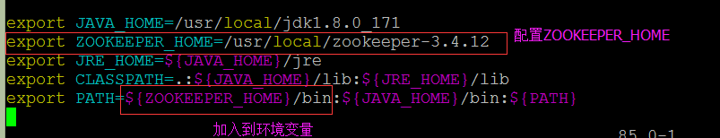
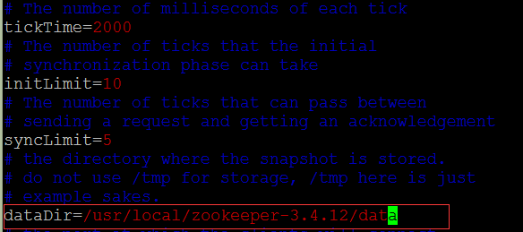

第一步：安装JDK
略。。。
第二步：上传安装包并解压
上传zookeeper-3.4.12.tar.gz文件到服务器并解压到/usr/local下
第三步：将zookeeper的安装路径加入到环境变量中

输入source /etc/profile命令使配置生效
第四步：重命名zookeeper的配置文件
进入到zookeeper安装路径下的conf目录下，命令为：cd /usr/local/zookeeper-3.4.12/conf
重命名目录下的zoo_sample.cfg为zoo.cfg，命令为：mv zoo_sample.cfg zoo.cfg
第五步：修改zookeeper的配置文件（设置数据缓存路径）
先在zookeeper安装路径下创建数据缓存目录：mkdir /usr/local/zookeeper-3.4.12/data
将zoo.cfg文件中的“dataDir=/tmp/zookeeper”这一行修改为“dataDir=/usr/local/zookeeper-3.4.12/data”
修改完之后如下：

第六步：启动zookeeper
执行命令启动zookeeper：zkServer.sh start
停止zookeeper
执行命令停止zookeeper：zkServer.sh stop